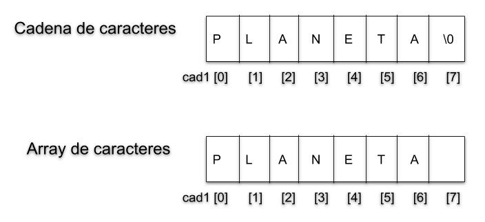

Tema 5: Datos estructurados: Arrays¶
1. Tipos de datos estructurados¶
A partir de los tipos de datos simples que hemos visto, se pueden definir en C otros tipos de datos compuestos por colecciones o agrupaciones de elementos de tipos simples. Los tipos estructurados o compuestos pueden almacenar más de un elemento (valor) a la vez. Se dividen en:
- Arrays: todos los elementos que almacena una variable de tipo array deben ser del mismo tipo. Pueden ser:
- Unidimensionales
- Multidimensionales
- Cadenas de caracteres
- Registros o estructuras: una variable de tipo registro puede almacenar elementos de distinto tipo. En C, se utiliza el tipo
structequivalente alrecordde otros lenguajes.
2. Tipo Array¶
Es una estructura de datos que contiene una colección de datos finita, homogénea y ordenada de elementos, y se almacena en posiciones de memoria contiguas.
- finita: debe determinarse cuál será el número máximo de elementos que podrán almacenarse en el array
- homogénea: todos los elementos deben ser del mismo tipo
- ordenada: se puede determinar cuál es el n-ésimo elemento del array
A un elemento específico de un array se accede mediante un índice, que siempre empieza en la posición 0 (la primera posición del array) y se numeran consecutivamente 0, 1, 2, 3, etc. La última posición tendrá como índice el número de elementos del array menos uno.
2.1 Declaración de un array¶
Sintaxis para declarar un array unidimensional en C:
1 | tipoDato nombreArray[dimension]; |
donde tipoDatorepresenta el tipo de los elementos que constituyen el array, nombreArrayel nombre de la variable utilizada para el array y dimensionel número de elementos del array. Por ejemplo:
1 | int numeros[10]; |
define un array llamado numeros que está formado por 10 elementos de tipo int. A cada elemento se acccede mediante un índice entre 0 y dimension-1 (0 y 9 en este caso).
La declaración anterior hace que el compilador reserve espacio suficiente para contener 10 valores enteros. En C los enteros ocupan 2 bytes, por lo que un array de 10 enteros ocupa 20 bytes de memoria.
Sintaxis para acceder a un elemento del array:
1 | array[indice] |
Así, por ejemplo, numeros[0] representa el primer elemento del array, y numeros[6] el séptimo elemento.
Hay que tener cuidado y no utilizar valores de índices fuera del rango ya que provocaría errores en la ejecución de nuestro programa. El compilador de C no comprueba que los índices de un array estén dentro del rango definido, por lo que si se intenta acceder a un índice fuera del rango, tendremos un error durante la ejecución de nuestro programa.
Otro ejemplo:
- El tipo del valor de la variable
aes un entero. - Cada elemento del array
b(b[0], ...,b[9]) es un entero y puede ser usado en cualquier contexto donde es usado un entero - Si nos referimos a
bsin corchetes, obtenemos la dirección de memoria donde empieza el array (veremos los punteros más adelante)
Inicialización de un Array
- Si se conocen los valores que toman las componentes del array al definirlo, podemos definir y asignar valores simultáneamente. Un array se puede inicializar en su declaración utilizando llaves {}:
1 | int vector[5] = {10, 20, 30, 40, 50}; |
- Tamaño automático: si no especificamos el tamaño del array, el compilador cuenta el número de elementos de la inicialización y ése es el tamaño del array
1 | int vectorB[] = {11, 23, 3, 10}; |
- Inicialización incompleta:
1 2 | // Se inicializan sólo los 4 primeros elementos int vectorC[10] = {7, 7, 7, 7}; |

1 2 | // Si hay más valores, da ERROR: int vectorD[5]={1, 20, 3, 40, 5, 60}; |
- También podemos inicializar un array haciendo que el usuario introduzca los datos por teclado:
1 2 3 4 5 6 7 8 9 10 11 12 13 14 15 16 17 | #define TAM 10 void inicializarArray(float calificaciones[]); int main () { float calificaciones[TAM]; inicializarArray(calificaciones); } // función para inicializar el array void inicializarArray(float calificaciones[]) { int i; for (i = 0;i < TAM ;i++) { printf("Introduce la calificación %d: ", i); scanf("%f", &calificaciones[i]); } } |
Precaución: C permite asignar valores fuera de rango a los subíndices. Se debe tener cuidado con no hacer esta acción, ya que se sobreescribirían datos o código.
2.2 Arrays y funciones¶
- En lenguaje C, el paso de parámetros de los arrays siempre es por referencia.
- En lenguaje C, las funciones no pueden devolver un tipo array estático. Para modificar un array, ha de ser pasado como parámetro (siempre es por referencia y por tanto se modificará el array original)
- Es imposible que la función determine el tamaño del array. Si se necesita el tamaño en la función, se tiene que pasar como argumento
- Si el número de elementos es fijo, se puede utilizar una constante
Ejemplos
Ejemplo 1:
1 2 3 4 5 6 7 8 9 10 11 12 13 14 15 16 17 18 19 20 21 22 23 24 25 26 27 28 29 30 31 32 33 34 35 36 37 38 39 40 41 42 43 44 45 | #define TAM 20 float calculaMedia(float [], int); int rellenaDatos(float []); int main() { int longitud; float v[TAM]; float media; longitud = rellenaDatos(v); media = calculaMedia(v, longitud); printf("La nota media es %.2f\n", media); return 0; } float calculaMedia(float a[], int len) { int i; float suma; suma = 0.0; for (i = 0; i < len; i++) suma = suma + a[i]; // suponemos len > 0 return(suma / len); } int rellenaDatos(float vector[]) { int indice = 0; float nota; do { printf("Introduce nota: "); scanf("%f", ¬a); if (nota != -1) { vector[indice] = nota; indice++; } }while(nota != -1); return indice; } |
Ejemplo 2:
1 2 3 4 5 6 | void printArray(float array[], int len){ int i; for (i = 0; i < len; i++) printf("[%.2f]\n", array[i]); } |
Ejemplo 3:
1 2 3 4 5 6 7 8 9 10 11 12 13 14 15 | /* Dado un array de enteros, mover todos sus elementos una posición a la derecha. El desplazamiento será circular, es decir, el último elemento pasará a ser el primero*/ void moverEnCircular (int v[]) { int i, ult; // guardar el valor de la última posición del array ult = v[LMAX-1]; // mover todos los elementos una posición a la derecha, excepto el último for (i = LMAX-1; i > 0; i--) v[i] = v[i-1]; // actualizar la primera posición con el valor que teníamos en la última v[0] = ult; } |
Ejemplo 4:
1 2 3 4 5 6 7 8 9 10 11 12 13 14 15 16 17 18 19 20 21 22 23 24 25 26 27 28 29 30 31 32 33 34 | /* Dado un array de enteros, devolver el mayor valor, el número de ocurrencias de dicho valor, y la posición de la primera y última aparición en la que se encuentra almacenada*/ void ocurrencias(int v[], int *mayor, int *num_ocur, int *pos_pri, int *pos_ult) { int i; *mayor = v[0]; // inicialmente el número mayor será el que está en la primera posición num_ocur = 1; *pos_pri = 0; *pos_ult = 0; // recorrer el array: desde la segunda posición hasta la posición final (constante LMAX) for (i=1; i < LMAX; i++) { if (v[i] > *mayor) { // encontramos un nuevo número mayor *mayor = v[i]; *num_ocur = 1; *pos_pri = i; *pos_ult = i; } else if (v[i] == *mayor) { // encontramos una nueva ocurrencia del número mayor hasta el momento *num_ocur = *num_ocur +1; *pos_ult = i; } } } int main() { int mayor, num_ocur, pos_pri, pos_ult; int v[] = {1,3,5,1,3,5}; ocurrencias(v, &mayor, &num_ocur, &pos_pri, &pos_ult); return 0; } |
3. Cadenas de caracteres¶
- En C no existe un tipo específico para definir
cadenas de caracteres (en otros lenguajes es el tipo
String). - En C, una cadena de caracteres se define como un array unidimensional de tipo
char. - En una cadena de caracteres el último carácter de la cadena debe estar seguido del carácter nulo que se representa por
'\0'. Este carácter marca el final de la cadena de caracteres. - Existen librerías con funciones para realizar la mayor parte de las operaciones básicas sobre cadenas.
Ejemplos:
1 2 | char cadena[20]; char cadena[]="Adios"; |
En las dos últimas declaraciones el tamaño del array será el número de caracteres dado en la inicialización más 1 (que corresponde al carácter ‘\0’).
Las cadenas se deben almacenar en arrays de caracteres, pero no todos lo arrays de caracteres contienen cadenas. Las cadenas contienen un carácter nulo al final del array de caracteres.

printf y scanf con cadenas¶
Las funciones printf y scanf tratan el '\0' automáticamente con %s
1 2 3 | printf("%s\n",cadena); scanf("%s", cadena); scanf("%[^\n]s", cadena); //lee la entrada estandar hasta encontrar \n, sin detenerse en espacios |
Librería string.h¶
Para trabajar con cadenas de caracteres, en C tenemos la librería string.h:
1 | #include <string.h> |
Algunas de las funciones que incluye:
-
int strlen(char s[]);Devuelve el tamaño de la cadena antes de'\0' -
char *strcpy(char dest[], char src[]);Copia la cadena origensrcen la cadena destinodest. -
char *strcat(char dest[], char src[]);Concatena la cadena origensrcal final de la cadena destinodest int strcmp(char s1[], char s2[]);Compara dos cadenas. Devuelve 0 en caso de que sean iguales. <0 si la primera cadena es menor y >0 si la primera cadena es mayor. Orden lexicográfico
strcpy y strcat devuelven un puntero a la cadena
resultante. No comprueban si el resultado cabe en la cadena final.
Ejemplos con cadenas de caracteres¶
Ejemplo 1:
1 2 3 4 5 6 7 8 9 10 11 12 13 14 15 | // devuelve la longitud de una cadena de caracteres // esta función es equivalente a strlen() int longitudCadena(char cad[]) { int len; len = 0; while (cad[len] != '\0') len++; return len; } |
Ejemplo 2:
1 2 3 4 5 6 7 8 9 10 11 12 13 14 15 16 17 18 19 | int main() { int n; char nombre1[20], nombre2[20]; printf("Teclea el primer nombre: "); scanf("%s", nombre1); printf("Teclea el segundo nombre: "); scanf("%s", nombre2); n = strcmp(nombre1,nombre2); if(n == 0) printf("Nombres iguales\n"); else if (n>0) printf("Primer nombre mayor que el segundo\n"); else printf("Primer nombre menor que el segundo\n"); return 0; } |
Ejemplo 3:
1 2 3 4 5 6 7 8 9 10 11 12 13 14 15 16 17 18 19 20 | int main() { char cad1[10], cad2[10]; strcpy(cad1, "Hola "); /* Se guardan en cad1 6 caracteres (incluido el ‘\0’)*/ strcpy(cad2, "y adios"); /* Se guardan en cad2 8 caracteres (incluido el ‘\0’) */ strcat(cad1, cad2); /* Se concatena la cadena cad2 al final de cad1. Observa que se intentan guardar en cad1 más caracteres que la longitud de la cadena. El compilador no da error y se escribe a continuación de cad1, en memoria que no pertenece a cad1. */ printf("cad1: %s\n", cad1); /* ERROR. Se intenta escribir cad1 hasta que encuentre un ‘\0’. El resultado es impredecible: puede escribir "Hola y adios" a pesar de que en total son más de 10 caracteres, puede escribir otra cosa o puede quedarse colgado el terminal. */ return 0; } |
Para solucionar el problema anterior (en cad1no cabe la cadena), podemos comprobar si se puede concatenar antes de hacerlo:
1 2 3 | // comprobar si se puede concatenar antes de hacerlo: if(strlen(cad1) + strlen(cad2) < 10) strcat(cad1,cad2); |
Funciones relacionadas con cadenas de caracteres
Algunas funciones de conversión incluidas en la librería stdlib.h
double atof(char *s): convierte la cadenasafloat
1 2 | char numero[11] = "123.456789"; printf( "Convertimos la cadena \"%s\" en un float: %f\n", numPtr, atof(numero) ); |
int atoi(char *s): convierte la cadenasaint
1 2 3 | int num; num = atoi("123"); printf("El int es: %d\n", num); |
long atol(char *s): convierte la cadenasalong int
1 2 | char numero[11] = "1234567890"; printf( "Convertimos la cadena \"%s\" en un long int: %u\n", numPtr, atol(numero) ); |
4. Arrays multidimensionales¶
Hemos visto los arrays unidimensionales, cuyos elementos se almacenan en posiciones contiguas de memoria, a cada una de las cuales se puede acceder directamente mediante un índice.
A los arrays de más de una dimensión se les denomina multidimensionales.
Sintaxis:
1 | tipo_elemento nombre_array [a][b][c]...[z]; |
- Una matriz es un array de 2 dimensiones, es decir un array unidimensional de arrays unidimensionales.
- En general, un array de dimensión n es un array unidimensional de arrays de dimensión n–1.
Ejemplos:
1 2 3 4 | // Array bidimensional de 6*10 enteros (matriz de 60 elems): int matriz[6][10]; //Array tridimensional de 3*2*5 reales (cubo de 30 elems): float cubo[3][2][5]; |
Almacenamiento en memoria arrays multidimensionales
Los elementos también se almacenan contiguos en memoria:

Inicialización arrays multidimensionales
-
Si se conocen todos los elementos al declarar el array, hay dos modos de escribir la lista de inicializaciones:
- Todos los valores seguidos:
1
int matriz[2][3]={0,1,2,10,11,12};
- Por partes (mejor, mayor claridad):
1 2
int matriz[2][3] = { {0,1,2}, {10,11,12} } ;
-
Si no se conocen, es útil recorrer el array (un bucle por cada dimensión) e ir asignando los valores
Arrays multidimensionales y funciones
Un array multidimensional, al igual que uno unidimensional, también puede pasarse como argumento a una función.
- Se pasa la dirección del primer elemento del array.
-
Ese primer elemento es otro array (de 1 dimensión menos).
-
Se puede usar el siguiente prototipo:
1 2 3 | // Recibe una matriz en la cual cada fila // tiene 10 enteros y con cualquier número de filas void func(int mat[][10]); |
Acceso a los elementos (por índices)
- Para identificar un elemento de un array multidimensional, se debe dar un índice para cada dimensión, en el mismo orden que en la declaración.
- Cada índice se encierra en sus propios corchetes

Ejemplo 1:
1 2 3 4 5 6 7 8 9 10 11 | // Array bidimensional con los números del 1 al 12 void main(){ int num[3][4], i,j; for(i = 0;i < 3; i++) for(j = 0;j < 4; j++) num[i][j] = (i * 4) + j + 1; return 0; } |

Ejemplo 2:
1 2 3 4 5 6 7 8 9 10 11 12 13 14 15 16 17 18 19 20 21 22 23 24 25 26 27 | //Programa que muestra los valores almacenados en //un array bidimensional 2 x 3 #define FILAS 2 #define COLUMNAS 3 int main() { int matriz[FILAS][COLUMNAS]= { {1,2,3}, {4,5,6} }; int fil,col; for(fil = 0; fil < FILAS; fil++) for(col = 0; col < COLUMNAS; col++) printf("El valor de [%d][%d] es %d\n", fil, col, matriz[fil][col]); return 0; } // Salida por pantalla: /* El valor de [0][0] es 1 El valor de [0][1] es 2 El valor de [0][2] es 3 El valor de [1][0] es 4 El valor de [1][1] es 5 El valor de [1][2] es 6 */ |
Ejemplo 3:
1 2 3 4 5 6 7 8 9 10 11 12 13 14 15 16 17 18 19 20 21 22 23 24 25 26 27 28 29 30 31 32 33 34 35 36 37 38 39 40 41 42 43 44 45 46 47 48 49 50 51 52 53 | // Suma de matrices #define FILAS 5 #define COLUMNAS 7 void rellena(int m[][COLUMNAS]); void suma(int m1[][COLUMNAS], int m2[][COLUMNAS], int r[][COLUMNAS]); void imprime(int m[][COLUMNAS]); int main() { int a[FILAS][COLUMNAS], b[FILAS][COLUMNAS], c[FILAS][COLUMNAS]; rellena(a); rellena(b); suma(a,b,c); imprime(c); return 0; } /* Función que rellena los valores de una matriz */ void rellena(int m[][COLUMNAS]) { int i,j; for(i = 0; i < FILAS; i++) for(j = 0; j < COLUMNAS; j++) { printf("Valor [%d,%d]: ", i,j); scanf("%d", &m[i][j]); } } /* Suma dos matrices */ void suma(int m1[][COLUMNAS], int m2[][COLUMNAS], int r[][COLUMNAS]) { int i, j; for(i = 0; i < FILAS; i++) for( j = 0; j < COLUMNAS; j++) { r[i][j] = m1[i][j] + m2[i][j]; } } /* Muestra una matriz*/ void imprime(int m[][COLUMNAS]) { int i,j; for(i = 0; i < FILAS; i++) { for(j = 0; j < COLUMNAS; j++) printf(" %d", m[i][j]); printf("\n"); } } |
Ejemplo donde pasamos como parámetro a una función sólo una fila de una matriz:
1 2 3 4 5 6 7 8 9 10 11 12 13 14 15 16 17 18 19 20 21 22 23 24 25 26 27 28 29 30 31 32 33 34 35 36 37 38 39 40 41 42 | void rellenaFila(int []); void imprimir(int [][5]); void rellenar(int [][5]); int main(){ int m[5][5]; int cont; cont = 3; rellenar(m); rellenaFila(m[cont]); //Modifica la fila 3 (vector) imprimir(m); return 0; } void rellenaFila(int v[]){ //Recibe una fila (vector) int i; for( i = 0; i < 5; i++){ v[i]= 100; } } void imprimir(int m[][5]) { int i, j; for(i = 0; i < 5; i++){ for(j = 0; j < 5; j++){ printf("%d ", m[i][j]); } printf("\n"); } } void rellenar(int m[][5]) { int i, j; for(i = 0; i < 5; i++){ for(j = 0; j < 5; j++){ m[i][j] = 20; } } } |
Definición de arrays utilizando typedef¶
- Mejora la legibilidad de los programas
1 2 3 4 5 6 7 8 9 | // Definición de tipos de datos typedef float TNotas[50]; typedef char TPalabra[30]; typedef int TMatriz[3][3]; // Declaración de variables TNotas notas1, notas2; TPalabra nombre, apellido; TMatriz matriz1, matriz2; |
Ejemplos de arrays utilizando typedef
-
Escribe un programa completo que lea un vector de enteros positivos e imprima el número mayor. Para la realización del programa utilizaremos tres funciones, una para leer el vector, otra para imprimir el vector por pantalla y otra para encontrar el elemento mayor.
1 2 3 4 5 6 7 8 9 10 11 12 13 14 15 16 17 18 19 20 21 22 23 24 25 26 27 28 29 30 31 32 33 34 35 36 37 38 39 40 41 42 43 44 45 46 47 48 49 50 51 52 53 54 55 56 57 58 59
#include <stdio.h> #include <stdlib.h> #include <stdbool.h> #define TAM 10 typedef int TVector[TAM]; void leerVector(TVector vector); void imprimirVector(TVector vector); int mayorVector(TVector vector); int main() { TVector vector; int mayor; leerVector(vector); imprimirVector(vector); mayor = mayorVector(vector); printf("El elemento mayor del vector es : %d\n",mayor); return 0; } //Función para leer el contenido del vector. //Leeremos números enteros positivos void leerVector(TVector vector) { int i; for(i = 0; i < TAM; i++) { printf("Introduce el numero de la posición %d: ",i); scanf("%d", &vector[i]); } } //Imprime por pantalla los elementos del vector. void imprimirVector(TVector vector) { int i; printf("Valores del vector: \n"); for(i = 0; i < TAM; i++) printf("%d ",vector[i]); printf("\n"); } //Función que devuelve el mayor número del vector. int mayorVector(TVector vector) { int i, mayor; mayor = vector[0]; // Al principio el mayor será el primer elemento. for(i = 1; i < TAM; i++) if(vector[i] > mayor) mayor = vector[i]; return mayor; }
-
Escribe un programa que pida una cadena de caracteres (de máximo 15 caracteres) y devuelva la cadena escrita al revés.
1 2 3 4 5 6 7 8 9 10 11 12 13 14 15 16 17 18 19 20 21 22 23 24 25 26 27 28 29 30
#define TAM 15 typedef char TCadena[TAM]; void alReves(TCadena, TCadena, int); int main(){ TCadena palabra, palabra_reves; int i, cont, longitud_palabra; printf("Introduzca una palabra: "); scanf("%s", palabra); longitud_palabra = strlen(palabra); alReves(palabra, palabra_reves, longitud_palabra); printf("Palabra escrita al revés: %s\n", palabra_reves); return 0; } void alReves(TCadena palabra, TCadena palabra_reves, int longitud){ int i, cont = 0; for(i = longitud - 1; i >= 0; i--) { palabra_reves[cont] = palabra[i]; cont++; } palabra_reves[cont] = '\0'; }
-
Escribe un programa que lea los datos de un array bidimensional o matriz de 5 filas por 4 columnas y luego imprima esta matriz por pantalla.
1 2 3 4 5 6 7 8 9 10 11 12 13 14 15 16 17 18 19 20 21 22 23 24 25 26 27 28 29 30 31 32 33 34 35 36 37 38
#define FILS 5 #define COLS 4 typedef int TMatriz[FILS][COLS]; void leerMatriz(TMatriz matriz); void escribirMatriz(TMatriz matriz); int main() { TMatriz matriz; leerMatriz(matriz); escribirMatriz(matriz); return 0; } void leerMatriz(TMatriz matriz) { int i, j; for(i = 0; i< FILS; i++) for(j = 0; j< COLS; j++) { printf("Introduzca el elemento (%d,%d): ", i, j); scanf("%d", &matriz[i][j]); } } void escribirMatriz(TMatriz matriz) { int i, j; for(i = 0; i< FILS; i++) { for(j = 0; j< COLS; j++) { // %5d formatea rellenando con espacios a tam 5 printf("%5d", matriz[i][j]); } printf("\n"); } }
-
Implementa un programa que rellene una matriz que contenga las tablas de multiplicar.
1 2 3 4 5 6 7 8 9 10 11 12 13 14 15 16 17 18 19 20 21 22 23 24 25 26 27 28 29 30 31 32 33 34 35 36 37 38 39 40 41 42 43
#define TAM 11 typedef int TMatriz[TAM][TAM]; void rellenaTablaMultiplicar(TMatriz A); void imprimir(TMatriz matriz); int main() { TMatriz tabla; rellenaTablaMultiplicar(tabla); imprimir(tabla); return 0; } void rellenaTablaMultiplicar(TMatriz A) { int i, j; A[0][0] = 0; // Rellenamos la tabla for (i = 0; i < TAM; i++) { for (j = 0; j < TAM; j++) { A[i][j] = i * j; } A[0][i] = i ; A[i][0] = i ; } } void imprimir(TMatriz matriz) { int i, j; for(i = 0; i < TAM; i++ ) { for(j = 0; j < TAM; j++) { printf("%d\t", matriz[i][j]); } printf("\n"); } }
5. Algoritmos de ordenación¶
Es interesante y habitual la operación de ordenación en un array. La búsqueda de un dato dentro de un conjunto es otro de los procesos más habituales en el tratamiento de información. Si los datos están ordenados, la localización de uno de ellos puede acelerarse.
Por ejemplo, si queremos mantener ordenado un vector de calificaciones para poder consultar rápidamente las cinco mejores notas, tendríamos que ordenar nuestro vector de mayor a menor (en orden decreciente) y acceder a las cinco primeras posiciones del vector.
Imaginemos que tenemos declarado el siguiente vector:
1 | int vec[5]={1, 5, 6, 4, 2}; |
Ahora queremos saber si un determinado valor, 3 por ejemplo, se encuentra en dicho vector, o queremos devolver el valor más parecido ¿qué haríamos? Lo mismo podemos hacer para cadenas de caracteres (que es donde más se usa la ordenación).
Vamos a ver varios métodos (algoritmos) de ordenación de vectores. Aunque los veamos para enteros, son perfectamente extensibles a otros tipos de datos (incluso registros). Sólo tendríamos que definir la manera de comparar datos (<, >, =) Podemos ordenar de mayor a menor o de menor a mayor.
Cada algoritmo tiene su complejidad. Son métricas que permiten conocer el tiempo de procesamiento de cada algoritmo. La forma estándar es utilizar ordenes de complejidad, que relacionan el tiempo de computación con el tamaño del problema a tratar. La jerarquía de ordenes de complejidad sería O(1)<O(log n)<O(n)<O(n logn)<O(n2)<O(n3)<O(n4)..
5.1 Algoritmo de la burbuja¶
El método de la burbuja funciona revisando cada elemento del vector que va a ser ordenado con el siguiente, intercambiándolos de posición si están en el orden equivocado. Es necesario revisar varias veces todo el vector hasta que no se necesiten más intercambios, lo cual significa que está ordenado. Este algoritmo obtiene su nombre de la forma con la que suben por la lista los elementos durante los intercambios, como si fueran pequeñas burbujas. También es conocido como el método del intercambio directo.
Características:
- Más sencillo e intuitivo de aplicar
- En el peor de los casos tenemos una complejidad cuadrática (si tenemos n datos, O(n2))
- Se empieza por el primer elemento de la lista y se recorre toda la lista.
- Dado un elemento, este se compara con el siguiente y si no está en el orden adecuado (por ejemplo, es mayor) se intercambia.
- Hay que recorrer n-1 veces la lista. Si es la iteración k, el punto anterior lo hacemos hasta n-k
Pseudocódigo:
1 2 3 4 5 6 7 8 9 10 | desde i = 1 hasta n hacer desde j = 0 hasta n-i hacer si elemento[j] > elemento[j+1] entonces // Intercambiar los elementos aux = V[j] V[j] = V[j+1] V[j+1] = aux fin_si fin_desde fin_desde |
Implementación en C:
1 2 3 4 5 6 7 8 9 10 11 12 13 | void burbuja(int v[], int elems) { int temp, i, j; for (i = 1; i < elems; i++) { for (j = 0; j < elems-i ; j++) { if (v[j] > v[j+1]) { temp = v[j]; v[j] = v[j+1]; v[j+1] = temp; } } } } |
5.2 Algoritmo de selección¶
Consiste en encontrar el menor de todos los elementos del vector e intercambiarlo con el que está en la primera posición. Luego el segundo mas pequeño, y así sucesivamente hasta ordenarlo todo. Su implementación requiere O(n2) comparaciones e intercambios para ordenar una secuencia de elementos.
- Mejora algo el anterior, aunque todavía tiene una complejidad O(n2)
- Realizamos n iteraciones
- Para cada iteración, buscamos el elemento con menor (mayor) valor del vector.
- Intercambiamos ese valor por la posición actual del vector
- En la primera iteración, buscamos el menor valor de todo el vector
- En la segunda, el segundo menor valor o el menor valor del resto del vector
Pseudocódigo:
1 2 3 4 5 6 7 8 9 | para i=1 hasta n-1; minimo = i; para j=i+1 hasta n si lista[j] < lista[minimo] entonces minimo = j fin si fin para intercambiar(lista[i], lista[minimo]) fin para |
Implementación en C:
1 2 3 4 5 6 7 8 9 10 11 12 13 14 | void seleccion(int v[], int tam) { int minimo=0, i, j; int swap; for(i = 0 ; i < tam-1 ; i++) { minimo = i; for(j = i+1 ; j < tam ; j++) if (v[minimo] > v[j]) minimo = j; swap = v[minimo]; v[minimo] = v[i]; v[i] = swap; } } |
5.3 Algoritmo de inserción¶
Este método consiste en insertar un elemento del vector en la parte izquierda del mismo que ya se encuentra ordenada. Este proceso se repite desde el segundo hasta el n-esimo elemento.
- Seguimos teniendo una complejidad O(n2)
- Es lo más parecido a ordenar un mazo de cartas
- El primer elemento de la lista lo consideramos ordenado
- Para el resto, vamos analizando uno a uno cada valor
- Cogemos el valor y lo insertamos en la posición correcta del vector que nos queda a la izquierda de dicho valor, desplazando los valores hacia la derecha
Implementación en C:
1 2 3 4 5 6 7 8 9 10 11 12 | void insercion(int numbers[], int array_size) { int i, a, index; for (i=1; i < array_size; i++) { index = numbers[i]; a = i-1; while (a >= 0 && numbers[a] > index) { numbers[a + 1] = numbers[a]; a--; } numbers[a+1] = index; } } |
6. Datos externos al programa con argumentos de main()¶
Para poder pasar parámetros a un programa a través de la línea de comandos utilizamos la siguiente definición de la función main:
1 | int main(int argc, char *argv[]) |
O esta otra equivalente:
1 | int main(int argc, char **argv) |
- El primer agumento entero
argc, contiene el número de argumentos recibidos por el programa, debemos considerar que siempre será el número de argumentos pasados más 1, ya que el primer agumento se reserva para contener el nombre del programa. - El segundo
argves un array de cadenas de caracteres que contiene los parámetros pasados en el mismo orden en que fueron escritos.
Un ejemplo de ejecución del programa con argumentos desde línea de comandos:
1 | ./miprograma 3 "hola" 5 |
Le estamos pasando 3 parámetros al programa miprograma:
argccontendrá el valor 4, debido al nombre del programa, y los dos argumentos pasados.argv[0]contendrá el nombre del ejecutablemiprogramaargv[1]será"3"argv[2]será"hola"argv[3]será"5"
Ejercicios propuestos de Arrays¶
-
Implementa una función que rellene una matriz con los primeros N números en zigzag, como indica la figura:

Matriz 4x4 resultante:
-
Implementa las funciones sobre cadenas de caracteres
strcmpyatoi. -
Implementa una función que reciba dos arrays ordenados de manera ascendente de 10 números y devuelva un vector de 20 números formado por los números de los vectores de entrada. Este array resultante también debe estar ordenado.
-
Implementa una función que reciba como parámetro una matriz de enteros de M filas y N columnas. La función debe cambiar el valor de la primera y última celda de cada fila de la siguiente manera:
- primera celda → valor más pequeño de las celdas adyacentes
-
última celda → valor más grande de las celdas adyacentes.

Por ejemplo, para la matriz:
La matriz resultante sería:

Bibliografía¶
- Capítulos 9.1 a 9.5 de "Programación en C, metodología, algoritmos y estructuras de datos", Luis Joyanes, Ignacio Zahonero
- Capítulos 8.1 y 8.2 de "Fundamentos de Programación", Jesús Carretero y otros
Programación 1, Grado de Robótica, curso 2020-21
© Departamento Ciencia de la Computación e Inteligencia Artificial, Universidad de Alicante
Cristina Pomares Puig